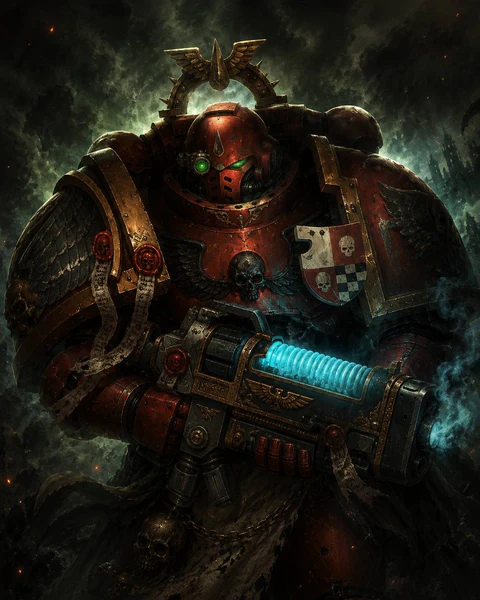

Blood Angels rules
Source-limited preview
Current official Blood Angels Faction Pack v1.1 and official live MFM v1.2 dated capture were verified 12 August 2026. The complete frozen Codex Supplement source is not available in this repository.